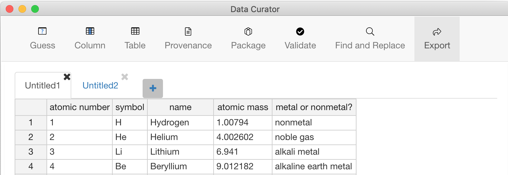

When you've finished working with the data and saved your changes, you can close a data table or close Data Curator.
To save changes you've made to the Column, Table, Provenance and Package information, you must export a Data Package.
After saving your work, move the pointer over the right side of a tab and click the symbol to close the table
To quit Data Curator and close all data tables:
A warning will appear stating, "There may be unsaved work. Are you sure you want to quit?". If you haven't saved your work, choose Cancel, and save each unsaved data table.
The only way to save changes you've made to the Column, Table, Provenance and Package information is to export the Data Package.